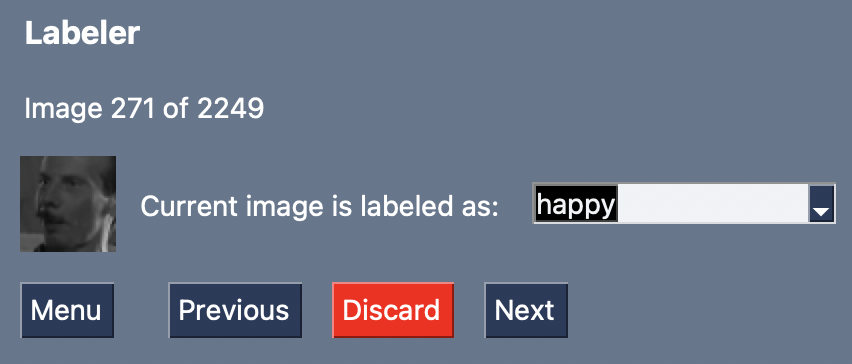
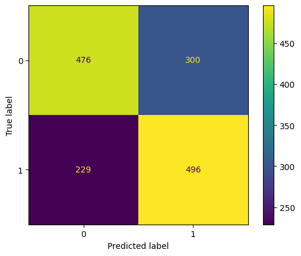

L'etichettatore semi-automatico per la generazione
La generazione di dataset per l'addestramento di modelli di emotion recognition risulta un'operazione ripetitiva e tediosa.
A titolo di esempio, si prenda in considerazione il dataset
FER-2013.
Questo consiste in una serie di immagini in scala di grigi di dimensione 48 x 48 pixel,
ciascuna etichettata secondo una delle seguenti categorie:

Esempio dati
Volendo generare nuove immagini per il dataset, sarebbe necessario:
Realizzando un etichettatore semi-automatico di dataset simil FER-2013, il processo si semplificherebbe notevolmente, permettendo di aumentare la quantità di dati associati alle varie emozioni.
Inoltre, sarebbe relativamente semplice introdurre nuove classi, permettendo di generare dataset il cui scopo va oltre quello di FER-2013 (es. dataset utile all'addestramento di modelli di drowsiness detection).
Per poter estrarre ed elaborare uno o più volti a partire da un'immagine, è stata sviluppata una pipeline di preprocessing specifica per questo caso di studio.
Questa consta di 4 passi:
Sono stati utilizzati due differenti algoritmi di face detection: MediaPipe Face Detection e OpenCV Haar Cascades .
La libreria MediaPipe offre un modulo dedicato interamente alla face detection:
mp.solutions.face_detection.
Dopo aver correttamente istanziato un face detector, è possibile processare l'immagine:
result = face_detection.process(image)result conterrà tutte le informazioni utili
all'identificazione dei volti nell'immagine (es. effettive detection, bounding box,
ecc...).MediaPipeDetector in
app/emotion_labeler/detectors.py).Si riporta un'esempio di preprocessing effettuato sulla seguente immagine:
Rafael Nadal - 22 volte campione Slam (al 1/11/2022)
Passo 1: Face detection
Passo 2: Cropping
Passo 3: Rescaling
Passo 4: Conversione dei colori
La libreria OpenCV offre un classificatore Haar Feature-Based dedicato ai volti:
cv2.CascadeClassifier.
Come nel caso precedente, una volta istanziato il classificatore, è possibile avviare l'operazione di detection utilizzando l'oggetto creato (attenzione, però, in questo caso l'immagine analizzata deve già essere stata convertita in scala di grigi):
faces = face_cascade.detectMultiScale(grayscaled_img)
A questo punto, la variabile faces conterrà tutti i riferimenti alle
bounding box relative ai volti dell'immagine e sarà possibile procedere con i passi
successivi (per un esempio pratico, fare riferimento alla classe
HaarCascadesDetector in app/emotion_labeler/detectors.py).
Al fine di addestrare un classificatore da utilizzare nell'applicativo, sono stati sperimentati diversi algoritmi e tecniche di machine learning.
Riferimento: AlgoritmiClassici.ipynb
In un primo momento, sono stati utilizzati tre algoritmi classici di classificazione:
Si riportano i punteggi ottenuti addestrando i modelli sui seguenti dati:
Dati: 2500 immagini etichettate come "happy" e 2500 come "sad"
Learning Curves per SVC
Confusion Matrix per SVC
| Precision | Recall | F1-Score | Support | |
|---|---|---|---|---|
| happy | 0.76 | 0.67 | 0.71 | 776 |
| sad | 0.68 | 0.77 | 0.72 | 725 |
| Accuracy | 0.72 | 1501 | ||
| Macro Avg. | 0.72 | 0.72 | 0.72 | 1501 |
| Weighted Avg. | 0.72 | 0.72 | 0.72 | 1501 |
Learning Curves per SGD
Confusion Matrix per SGD
| Precision | Recall | F1-Score | Support | |
|---|---|---|---|---|
| happy | 0.66 | 0.59 | 0.62 | 776 |
| sad | 0.60 | 0.77 | 0.64 | 725 |
| Accuracy | 0.63 | 1501 | ||
| Macro Avg. | 0.63 | 0.63 | 0.63 | 1501 |
| Weighted Avg. | 0.63 | 0.63 | 0.63 | 1501 |
Learning Curves per MLP
Confusion Matrix per MLP
| Precision | Recall | F1-Score | Support | |
|---|---|---|---|---|
| happy | 0.68 | 0.61 | 0.64 | 776 |
| sad | 0.62 | 0.68 | 0.65 | 725 |
| Accuracy | 0.65 | 1501 | ||
| Macro Avg. | 0.65 | 0.65 | 0.65 | 1501 |
| Weighted Avg. | 0.65 | 0.65 | 0.65 | 1501 |
Riferimento: VGGLikeDeepClassifier.ipynb
È stata poi utilizzata una rete neurale convoluzionale profonda avente struttura simile
alla rete VGG-16.
In estrema sintesi, questa prevede una sequenza di layer convoluzionali (terminante
ciascuno in un layer di pooling)
agganciati ad una sequenza di layer completamente connessi.
La figura seguente riporta uno schema dell'architettura:

Architettura VGG-16 (fonte: Towards Data Science)
In questo caso, i risultati ottenuti con il dataset ridotto (solo immagini felici / tristi) sono eccellenti.
Accuracy per VGG-16
Loss per VGG-16
Confusion Matrix per VGG-16
| Precision | Recall | F1-Score | Support | |
|---|---|---|---|---|
| happy | 0.94 | 0.91 | 0.93 | 2380 |
| sad | 0.88 | 0.92 | 0.90 | 1595 |
| Accuracy | 0.92 | 3975 | ||
| Macro Avg. | 0.91 | 0.92 | 0.91 | 3975 |
| Weighted Avg. | 0.92 | 0.92 | 0.92 | 3975 |
Il dataset utilizzato per l'addestramento è il FER-2013:
Il dataset FER-2013
È facile intuire come la presenza di dati skewed possa rappresentare una difficoltà aggiunta per l'addestramento del modello.
I risultati sono riportati di seguito:
Accuracy per VGG-16
Loss per VGG-16
Confusion Matrix per VGG-16
| Precision | Recall | F1-Score | Support | |
|---|---|---|---|---|
| happy | 0.86 | 0.85 | 0.85 | 2429 |
| sad | 0.54 | 0.50 | 0.52 | 1588 |
| angry | 0.55 | 0.55 | 0.55 | 1303 |
| disgust | 0.69 | 0.28 | 0.40 | 141 |
| fear | 0.56 | 0.30 | 0.39 | 1338 |
| neutral | 0.50 | 0.77 | 0.60 | 1621 |
| surprise | 0.75 | 0.76 | 0.76 | 1054 |
| Accuracy | 0.64 | 9474 | ||
| Macro Avg. | 0.64 | 0.57 | 0.58 | 9474 |
| Weighted Avg. | 0.65 | 0.64 | 0.63 | 9474 |
Riferimento: ResNetV2Classifier.ipynb
L'ultima architettura presa in analisi è ResNetV2, una rete neurale convoluzionale profonda ideata da Christian Szegedy, Sergey Ioffe, Vincent Vanhoucke ed Alex Alemi (qui la pubblicazione) avente la seguente struttura:
Architettura VGG-16 (fonte: Papers with code)
La rete è disponibile tra le Applications predefinite di Keras, per cui non è necessario modellare l'architettura via codice.
In questo caso, i risultati sul dataset completo sono i seguenti:
Accuracy per ResNet50V2
Loss per ResNet50V2
Confusion Matrix per ResNet50V2
| Precision | Recall | F1-Score | Support | |
|---|---|---|---|---|
| happy | 0.85 | 0.81 | 0.83 | 2381 |
| sad | 0.48 | 0.51 | 0.50 | 1598 |
| angry | 0.54 | 0.53 | 0.53 | 1348 |
| disgust | 0.70 | 0.39 | 0.50 | 141 |
| fear | 0.44 | 0.42 | 0.43 | 1320 |
| neutral | 0.55 | 0.61 | 0.58 | 1653 |
| surprise | 0.71 | 0.72 | 0.72 | 1030 |
| Accuracy | 0.61 | 9474 | ||
| Macro Avg. | 0.61 | 0.57 | 0.58 | 9474 |
| Weighted Avg. | 0.62 | 0.61 | 0.61 | 9474 |
Per sviluppare l'applicazione sono state utilizzate le seguenti tecnologie:
Riferimento: How are You?
L'applicazione permette di generare un dataset simil FER-2013 in maniera semi-automatica a partire da un file video. Il funzionamento è il seguente:
Le fasi a carico dell'utente sono due: quella di configurazione e quella di revisione.
Schermata di configurazione dell'applicazione
Nella fase di configurazione, l'applicazione prevede diverse sezioni, ciascuna dedicata alla configurazione di parametri specifici.
Configurazione generica
Consente di selezionare il video da processare e la cartella all'interno della quale
andare a salvare il dataset generato.
Face Detector
Consente di selezionare quale pipeline di preprocessing utilizzare in fase di analisi
dei singoli fotogrammi del video.
Backend
Consente di selezionare quali modelli utilizzare per etichettare le immagini.
Inoltre, permette di dare un peso alla previsione effettuata da ciascun modello in modo
che, nel caso di utilizzo combinato, ogni algoritmo contribuisca differentemente al
risultato finale.
Nota: degli algoritmi presentati nella sezione precedente, per ragioni di efficienza
dell'applicativo, è stato integrato esclusivamente il modello basato su architettura
VGG-16. È stato inserito, però, il classificatore contenuto nella libreria DeepFace.
Undersampler
Permette di selezionare una strategia di riduzione del numero totale di frame
estratti dal video.
L'opzione Random seleziona una percentuale (definibile nella casella di input
posta di fianco alla checkbox) casuale del numero totale di frame.
L'opzione Histogram, invece, elimina quei frame per i quali il confronto tra i
relativi
istogrammi è maggiore di una determinata soglia (definibile nella casella di input
posta di fianco alla checkbox).
Schermata di revisione dell'applicazione
La schermata permette di modificare l'etichetta assegnata ad un dato frame o di rimuoverlo dalla lista di immagini generate (utile nel caso in cui l'algoritmo di face detection abbia individuato un falso positivo).

Esempio di dataset generato
Esempio di insieme di immagini etichettate come neutral
Al termine della fase di revisione, le immagini etichettate vengono salvate nella cartella specificata in fase di configurazione seguendo la struttura del dataset FER-2013: una cartella per ogni etichetta contenente tutte le immagini associate a quest'ultima.
Riferimento: emoji_detector
Per testare l'effettiva efficacia del modello simil VGG-16 addestrato utilizzando solo due classi (happy / sad), è stata sviluppata un applicazione che, in tempo reale, sostituisce ad un volto l'emoji del sentimento relativo.
Questa utilizza una pipeline di preprocessing del tutto analoga a quella presentata per l'applicazione "How are You?", ma, in aggiunta, sostituisce i pixel del volto con quelli di un emoji precaricata in fase di avvio.
Si riportano, a titolo di esempio, due screenshot dell'applicativo.
Quando Yannik Sinner perde ai trentaduesimi di un Master 1000...
ma Lorenzo Musetti ha battuto Marin Cilic!
Riferimento: Video Emotion Detection
Per testare l'effettiva efficacia della pipeline di riconoscimento del volto e relativa analisi dell'emozione, è stata sviluppata un applicazione che, in tempo reale, applica la procedura ad un file video, mostrando il risultato frame dopo frame.
L'applicazione permette, da linea di comando, di selezionare quale modello di Mediapipe
utilizzare in fase di riconoscimento del volto.
Sono disponibili due alternative (fonte documentazione
MediaPipe):
Si riporta un breve esempio del funzionamento dell'applicativo.
Funzionamento dell'applicazione (video: Ibrahim Maalouf - Happy Face)